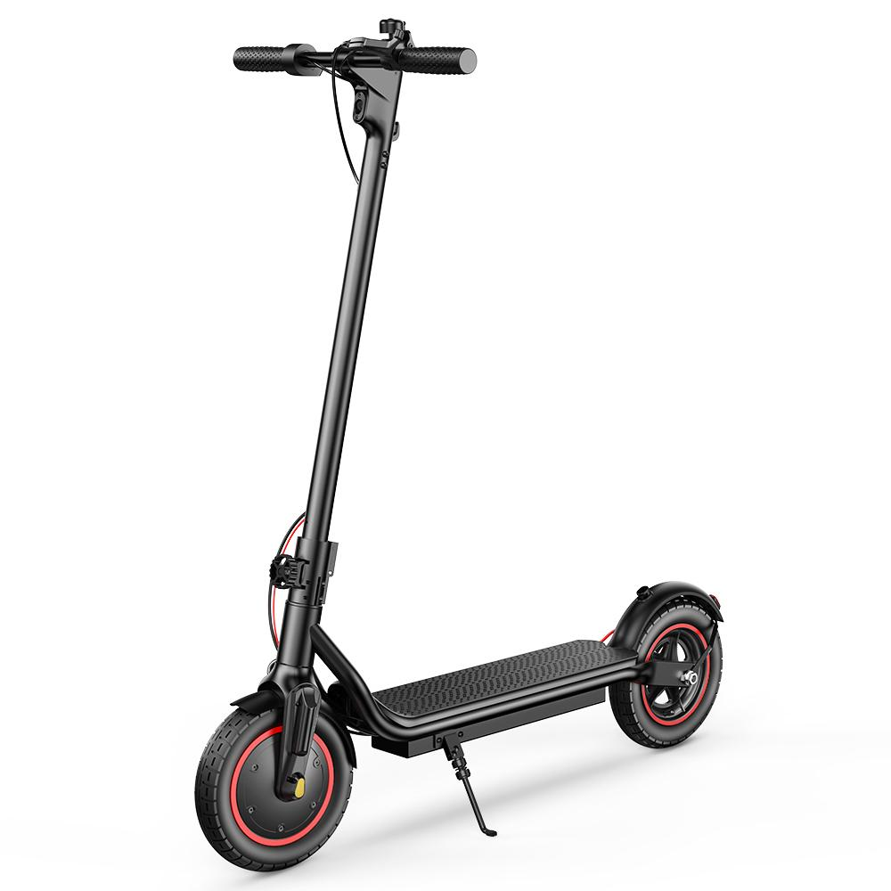
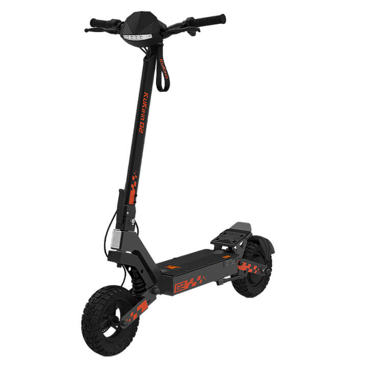
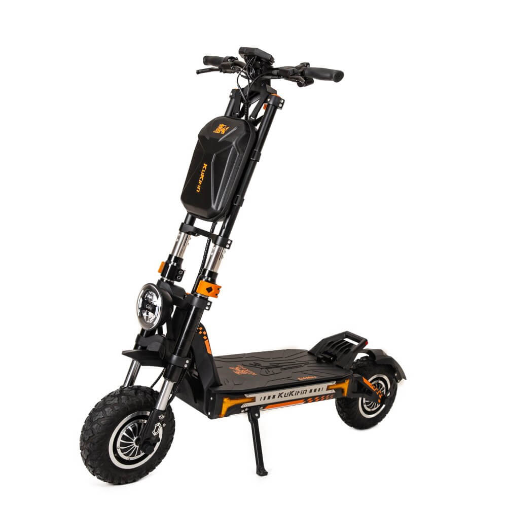

Az elektromos roller az elmúlt években egyre népszerűbb közlekedési eszközzé vált. Főleg városokban használják, ahol rövidebb távolságok megtételére gyors és kényelmes megoldást jelenthet. Az elektromos rollerek akkumulátorról működnek, ezért nincs szükség benzinre vagy más üzemanyagra. Sok modell összecsukható, így könnyen beférhet egy autóba, és tömegközlekedés mellett is praktikus lehet. A különböző típusok között vannak kisebb, könnyebb városi modellek és nagyobb teljesítményű rollerek is.
Az elektromos roller működését egy akkumulátor és egy elektromotor biztosítja. Az akkumulátor tárolja az elektromos energiát, amelyet a motor használ fel a roller mozgatásához. A vezető a kormányon található kezelőszervekkel tudja szabályozni a sebességet. A modernebb modelleken gyakran található kijelző is, amely megmutatja például az aktuális sebességet, az akkumulátor töltöttségét és bizonyos esetekben a megtett távolságot is. A hatótáv és a teljesítmény függ a roller motorjától és akkumulátorától, de az időjárás, az út emelkedése és a vezető súlya is befolyásolhatja.
Az elektromos roller egyik legnagyobb előnye, hogy könnyen használható a mindennapi közlekedésben. Rövidebb utak esetén időt takaríthatunk meg vele, és nem kell parkolóhelyet keresni egy nagyobb jármű számára. A roller karbantartása is általában egyszerű, azonban rendszeresen ellenőrizni kell a fékeket, a gumikat, a világítást és az akkumulátor állapotát. A biztonságos közlekedéshez fontos a környezet folyamatos figyelése és a megfelelő sebesség megválasztása. Bukósisak használata is ajánlott, különösen nagyobb sebességnél. Sötétben a megfelelő világítás és láthatóság szintén nagyon fontos.
A piacon rengeteg különböző elektromos roller található. Ismertebb gyártók közé tartozik például a Xiaomi, a Segway-Ninebot és a KuKirin. A modellek között nagy különbségek lehetnek teljesítményben, hatótávban, végsebességben, méretben és árban. Egy városi használatra készült roller általában könnyebb és kisebb, míg az erősebb modellek nagyobb motorral, nagyobb akkumulátorral és robusztusabb vázzal rendelkezhetnek. Vásárlás előtt érdemes átgondolni, hogy milyen távolságokra szeretnénk használni a rollert, milyen útviszonyok között közlekedünk, és milyen felszereltségre van szükségünk.
Az elektromos roller az elmúlt években egyre népszerűbb közlekedési eszközzé vált. Főleg városokban használják, ahol rövidebb távolságok megtételére gyors és kényelmes megoldást jelenthet. Az elektromos rollerek akkumulátorról működnek, ezért nincs szükség benzinre vagy más üzemanyagra. Sok modell összecsukható, így könnyen beférhet egy autóba, és tömegközlekedés mellett is praktikus lehet. A különböző típusok között vannak kisebb, könnyebb városi modellek és nagyobb teljesítményű rollerek is.
Az elektromos roller működését egy akkumulátor és egy elektromotor biztosítja. Az akkumulátor tárolja az elektromos energiát, amelyet a motor használ fel a roller mozgatásához. A vezető a kormányon található kezelőszervekkel tudja szabályozni a sebességet. A modernebb modelleken gyakran található kijelző is, amely megmutatja például az aktuális sebességet, az akkumulátor töltöttségét és bizonyos esetekben a megtett távolságot is. A hatótáv és a teljesítmény függ a roller motorjától és akkumulátorától, de az időjárás, az út emelkedése és a vezető súlya is befolyásolhatja.
Az elektromos roller egyik legnagyobb előnye, hogy könnyen használható a mindennapi közlekedésben. Rövidebb utak esetén időt takaríthatunk meg vele, és nem kell parkolóhelyet keresni egy nagyobb jármű számára. A roller karbantartása is általában egyszerű, azonban rendszeresen ellenőrizni kell a fékeket, a gumikat, a világítást és az akkumulátor állapotát. A biztonságos közlekedéshez fontos a környezet folyamatos figyelése és a megfelelő sebesség megválasztása. Bukósisak használata is ajánlott, különösen nagyobb sebességnél. Sötétben a megfelelő világítás és láthatóság szintén nagyon fontos.
A piacon rengeteg különböző elektromos roller található. Ismertebb gyártók közé tartozik például a Xiaomi, a Segway-Ninebot és a KuKirin. A modellek között nagy különbségek lehetnek teljesítményben, hatótávban, végsebességben, méretben és árban. Egy városi használatra készült roller általában könnyebb és kisebb, míg az erősebb modellek nagyobb motorral, nagyobb akkumulátorral és robusztusabb vázzal rendelkezhetnek. Vásárlás előtt érdemes átgondolni, hogy milyen távolságokra szeretnénk használni a rollert, milyen útviszonyok között közlekedünk, és milyen felszereltségre van szükségünk.
>>>>>>> 87ba1f0fa9a3bfe2d4b542aeea06d86bc235d37c